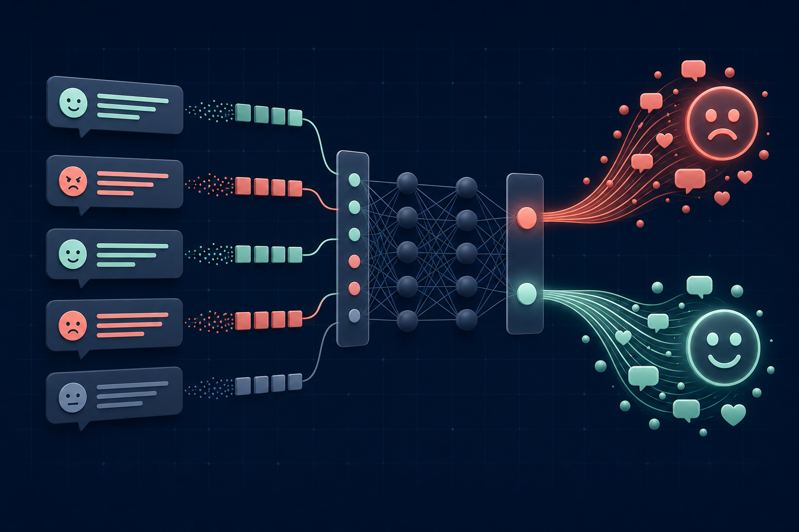
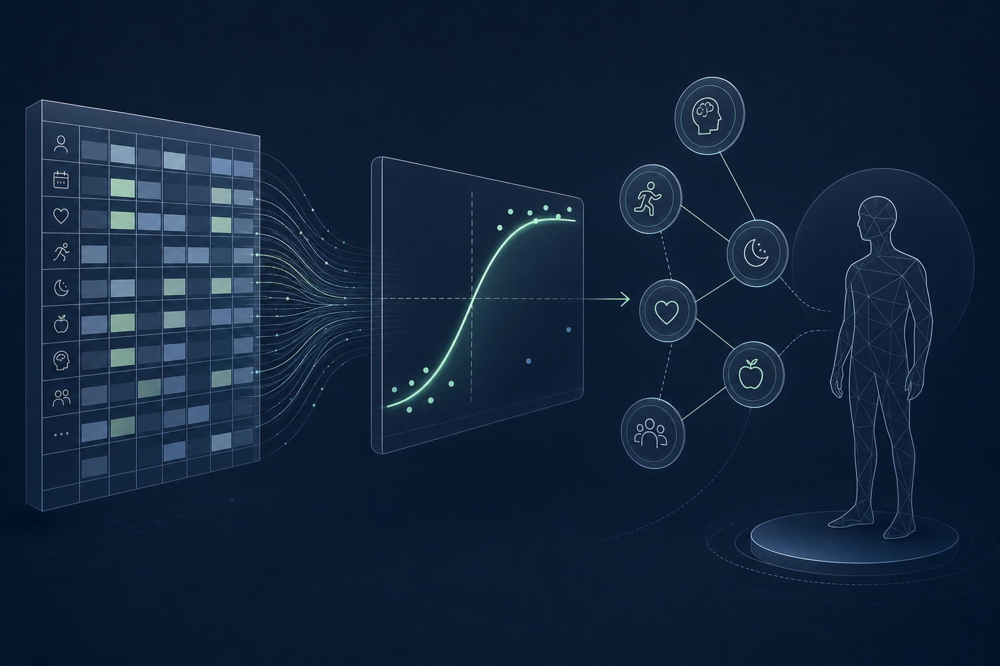
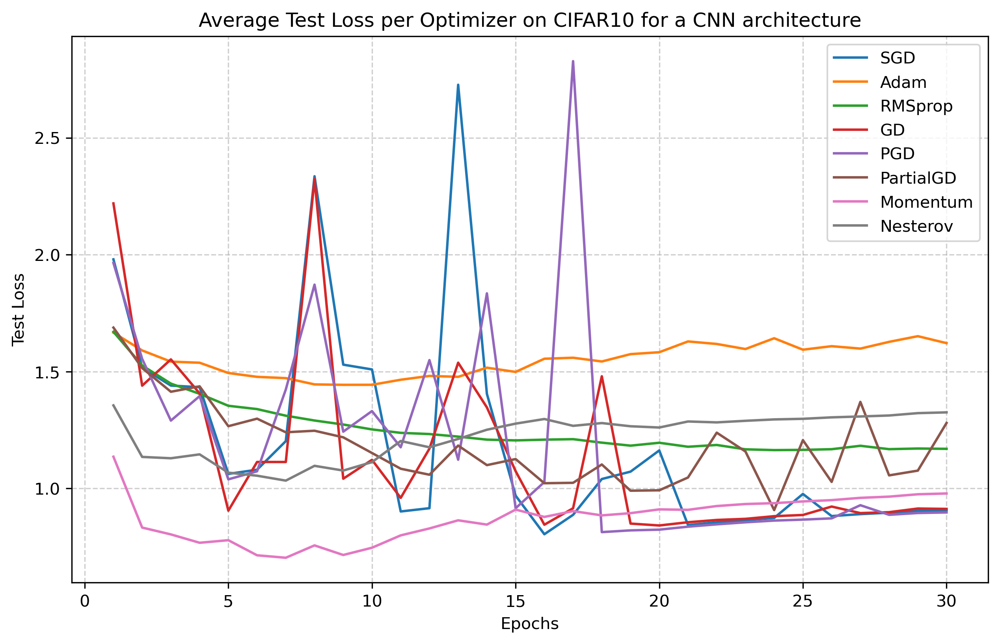
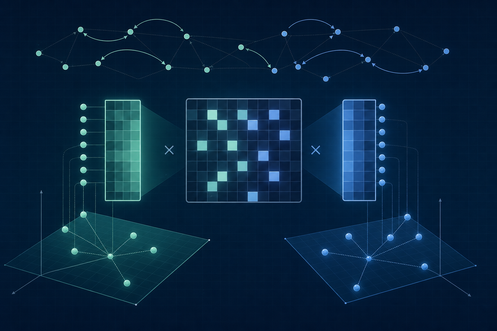

2026
Stagiaire IA — Richemont AI Lab, R&I
Conception d’un graphe de connaissances et de modèles de ML pour améliorer l’interprétabilité, ainsi que d’une interface intégrant un agent basé sur un LLM.
IA & data science · Lausanne, Suisse
Concevoir des systèmes d’IA utiles et rigoureux.
Ingénieur IA & data science, avec une formation en physique, mathématiques et machine learning appliqué.
Me contacter01 — Profil
J’aime transformer une question difficile en système clair et fiable. Mon travail combine machine learning, NLP et outils de données avec une approche analytique nourrie par la physique.
02 — Expérience
2026
Conception d’un graphe de connaissances et de modèles de ML pour améliorer l’interprétabilité, ainsi que d’une interface intégrant un agent basé sur un LLM.
2022—2025
Accompagnement de plus de 50 étudiants par semestre en Python, mathématiques et physique.
2023—2024
Coordination d’un événement d’intégration de 900 étudiants, 150 membres du staff, des sponsors et un budget de CHF 20’000.
03 — Formation
2024—2026
EPFL · Prévu en 2026
2021—2024
EPFL
04 — Projets sélectionnés
01
NLP · Post-entraînement de LLM
Entraînement et évaluation de variantes Qwen pour le raisonnement STEM à choix multiple, dont DPO, MCQA et RAG-MCQA.

02
NLP · Classification
Comparaison d’approches classiques et basées sur les transformers pour la classification de tweets à grande échelle.

03
Machine learning · Données tabulaires
Modèles NumPy et pipeline robuste de prétraitement et de validation croisée pour l’analyse de facteurs de risque.

04
Optimisation · Deep learning
Comparaison d’optimiseurs classiques, adaptatifs et contraints sur des architectures MLP et CNN.

05
Systèmes de recommandation · Recherche
Étude de l’apprentissage de préférences à partir de comparaisons par paires plutôt que de notes numériques directes.
06
Physique · Calcul scientifique
Archive de simulations C++ et MATLAB, d’analyses et de rapports réalisés dans le cadre des exercices de physique numérique à l’EPFL.
Restons en contact